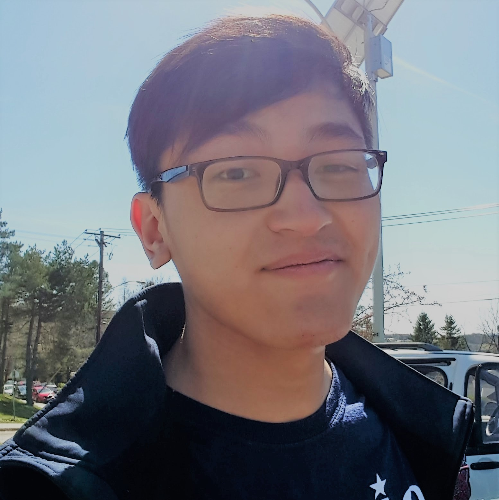

Personal Bio
Born shortly after Tiger's dominant '97 Masters, raised in Bayside, NY. Picked up the game at the age of nine, joined the first iteration of HCHS Varsity Golf team at age 15. Served as team captain in my junior and senior year of high school, leading our team to the semifinals of the NYC PSAL Championship and winning MVP honors in 2015.
I play at the Old Westbury Golf and Country Club in Westbury, NY, where my father has been a member for two years. My best round as of July 2018 is an 84 on Overlook-Woods.